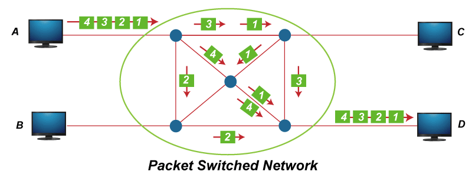
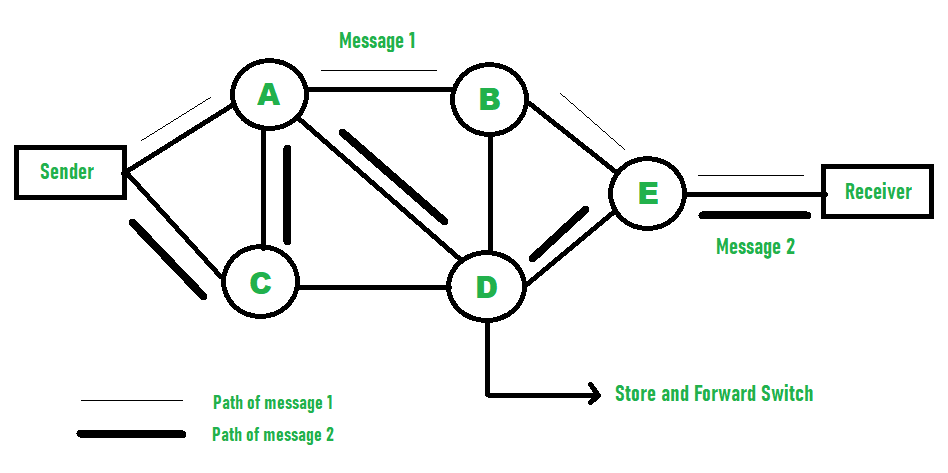

Communication Switching Techniques
Introduction
Switching is the technique by which nodes control or switch data to transmit it between specific points on a
network. There are three main switching techniques used in computer networks: circuit switching, packet
switching, and message switching.
Circuit Switching
Circuit switching is a switching technique that establishes a dedicated path between sender and receiver.
Once the connection is established, the dedicated path will remain to exist until the connection is
terminated.
Functions :
- Establishes a dedicated path between sender and receiver
- Used for voice transmission
- Fixed data can be transferred at a time
Phases :
- Circuit establishment or setup phase
- Data transfer phase
- Circuit disconnect or tear down phase
Packet Switching
Packet switching is a digital networking communications method that groups all transmitted data into suitably
sized blocks, called packets, that are transmitted via a medium that may be shared by multiple simultaneous
communication sessions.
Functions:
- Groups all transmitted data into suitably sized blocks
- Transmits via a medium that may be shared by multiple simultaneous communication sessions
Types of packet switching :
- Datagram Packet Switching : In this type of packet switching, each packet is treated
independently from all others. Even if two packets are part of the same message, they may take different
paths to reach the destination. This type of switching is used when the network needs to be robust and
survive failures of some of its parts.
- Virtual Circuit Packet Switching : This type of packet switching establishes a dedicated
path for data transmission before sending the packets, which helps reduce delays and improve
performance. It is similar to circuit switching in that a dedicated path is established before any data
transmission occurs. However, unlike circuit switching, the path is virtual rather than physical.

Message Switching
Message switching was a precursor of packet switching, where messages were routed in their entirety, one hop
at a time. It was originally developed for the telegraph networks, and later for early computer networking.
Functions:
- Messages are routed in their entirety, one hop at a time
- Originally developed for the telegraph networks, and later for early computer networking
